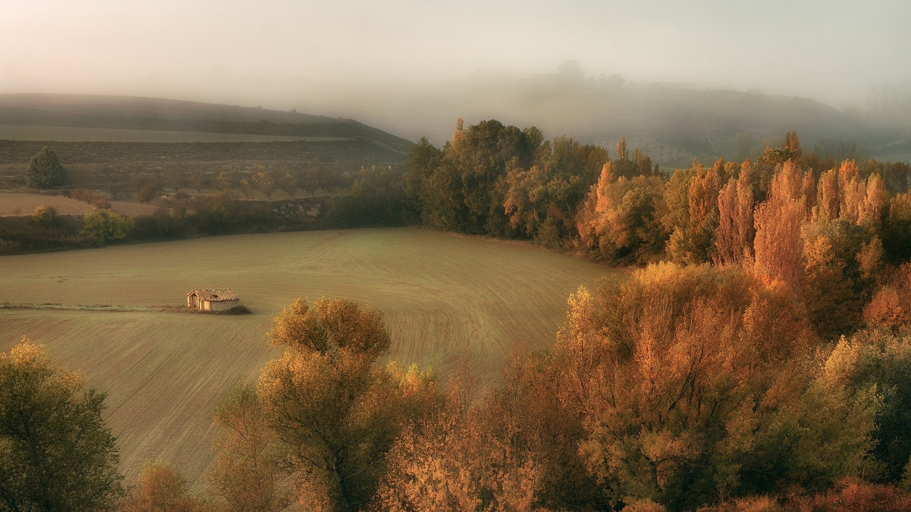
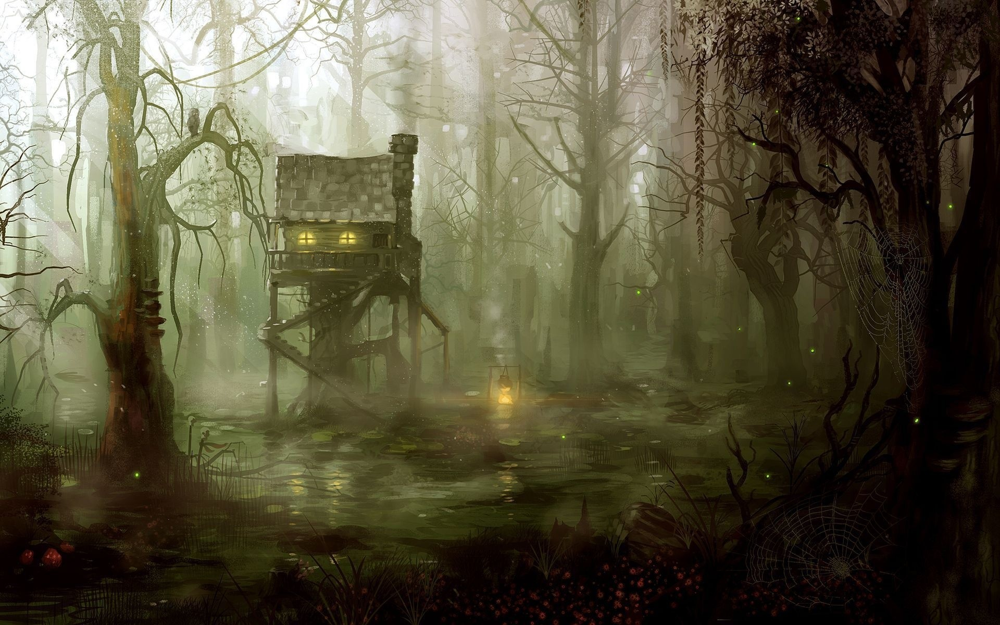
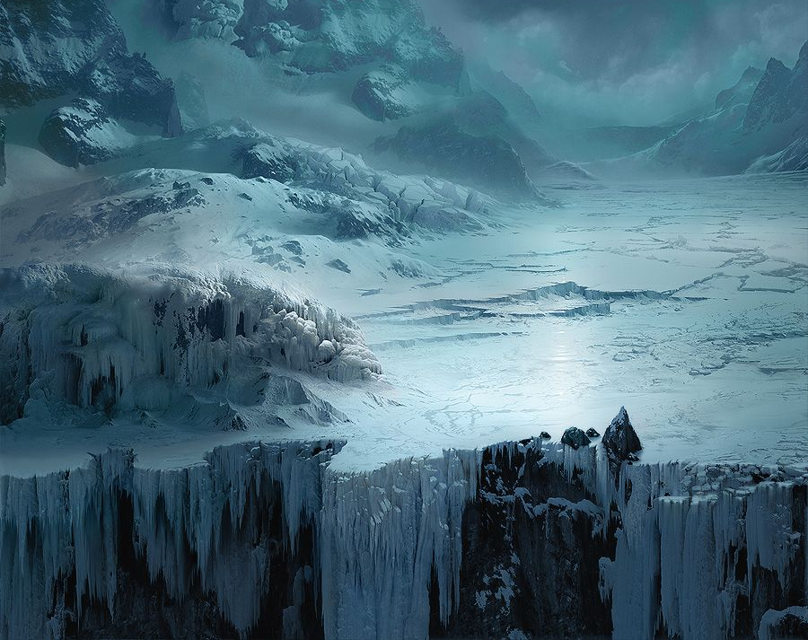

Les Plaines de la Joie

Les Plaines de la Joie sont des terres étranges ou le bonheurs sembles toujours être présent avec des collines douces qui ondulent à perte de vue, ponctuées de forêts où le vent chante avec une douceur presque hypnotique. Ici, le soleil brille presque toujours, dorant la terre d’une lumière tiède ; et dans l’air flotte en permanence un concert d’oiseaux, si régulier qu’il paraît orchestré.
Et pourtant, tout semble très étrange, tordus, altéré. Le parfum des fleurs est parfois si doux qu’il en devient écœurant. Les chants d’oiseaux ne varient jamais, comme s’ils étaient répétés encore et encore, sans véritable source. Il y a dans l’air une impression persistante d’artifice, comme si cette nature n’existait que pour masquer quelque chose de plus sombre, de plus ancien.
Les Plaines de la joie sont très peut peupler même si c'est la région de Grossevache avec la plus grande population. Certains préfère vivrent dans de petits villages pittoresques, entourés de champs bien entretenus et de maisons peintes de couleurs vives. Cependant la majorité choisisent une vie d’isolement. On les trouve au plus profond des forêts, dans les clairières reculées et même dans de grottes sombre.
Les plus anciens voyageurs affirment qu’ici, la joie n’est pas un choix mais une condition — comme une maladie, qui ronge l’esprit jusqu’à ce qu’il se courbe sous son poids. Pas tout le mondes est affecter, environs 40% des habitants des Plaines de la joie semple être affliger de cette joie maladive.
Le Village de Grandarbre: Petits hameaux où les maisons sont décorées de couleurs vives et de guirlandes. Les fêtes y sont constantes, mais les regards des villageois trahissent une angoisse sous- jacente. Le bonheur constant est inexplicable est incurable, il affecte environs deux enfant sur trois. Ces enfants qui sont si heureux ont toujours un regard effrayer qui trahis une perte importante qu’ils ont subis, ces enfants sont née sans âme.
Et pourtant, tout semble très étrange, tordus, altéré. Le parfum des fleurs est parfois si doux qu’il en devient écœurant. Les chants d’oiseaux ne varient jamais, comme s’ils étaient répétés encore et encore, sans véritable source. Il y a dans l’air une impression persistante d’artifice, comme si cette nature n’existait que pour masquer quelque chose de plus sombre, de plus ancien.
Les Plaines de la joie sont très peut peupler même si c'est la région de Grossevache avec la plus grande population. Certains préfère vivrent dans de petits villages pittoresques, entourés de champs bien entretenus et de maisons peintes de couleurs vives. Cependant la majorité choisisent une vie d’isolement. On les trouve au plus profond des forêts, dans les clairières reculées et même dans de grottes sombre.
Les plus anciens voyageurs affirment qu’ici, la joie n’est pas un choix mais une condition — comme une maladie, qui ronge l’esprit jusqu’à ce qu’il se courbe sous son poids. Pas tout le mondes est affecter, environs 40% des habitants des Plaines de la joie semple être affliger de cette joie maladive.
Lieux Importants :
Le Grand Arbre: Un arbre immense au centre des plaines, dont les feuilles scintillent de lumière. Il est vénéré par les habitants, qui lui attribuent leur bonheur.Le Village de Grandarbre: Petits hameaux où les maisons sont décorées de couleurs vives et de guirlandes. Les fêtes y sont constantes, mais les regards des villageois trahissent une angoisse sous- jacente. Le bonheur constant est inexplicable est incurable, il affecte environs deux enfant sur trois. Ces enfants qui sont si heureux ont toujours un regard effrayer qui trahis une perte importante qu’ils ont subis, ces enfants sont née sans âme.
Les Marécages de l’Ouest

Les Marécages de l’Ouest s’étendent comme une mer verdâtre et inerte, où chaque pas s’enfonce dans un sol spongieux, gorgé d’eau noire. L’air est saturé d’humidité et chargé d’une brume stagnante qui ne se dissipe jamais complètement, même en plein jour. Les odeurs y sont âcres : mélange d’algues pourries, de vase et de bois mouillé. La lumière du soleil, lorsqu’elle parvient à percer le voile de brouillard, se diffracte en rais pâles, donnant à tout un aspect fantomatique.
La végétation est un enchevêtrement oppressant : racines noueuses, lianes pendantes, roseaux épais et arbres tordus dont les branches s’étirent comme des doigts griffus. Sous la surface des eaux calmes se cachent des abîmes de vase capables d’engloutir un homme en quelques secondes.
La plupart des habitants des marais sont des tribus nomades qui connaissent chaque recoin de ces terres inhospitalières. Leurs tentes de cuir huilé et de roseaux se déplacent au gré des saisons et des proies. Il y as constament des conflit entre les clans, souvent des disputes de territoire, des vengeances..
Isolées mais craintes, Des sorcieres vivent dans des huttes perchées sur pilotis, au cœur des zones les plus redouter. Certaines sont des guérisseuses, d’autres des manipulatrices qui commercent avec les âmes.
Les Ruines Immergées : Vestiges d'une ancienne civilisation, ces ruines sont maintenant partiellement submergées et hantées par des esprits vengeurs.
La végétation est un enchevêtrement oppressant : racines noueuses, lianes pendantes, roseaux épais et arbres tordus dont les branches s’étirent comme des doigts griffus. Sous la surface des eaux calmes se cachent des abîmes de vase capables d’engloutir un homme en quelques secondes.
La plupart des habitants des marais sont des tribus nomades qui connaissent chaque recoin de ces terres inhospitalières. Leurs tentes de cuir huilé et de roseaux se déplacent au gré des saisons et des proies. Il y as constament des conflit entre les clans, souvent des disputes de territoire, des vengeances..
Isolées mais craintes, Des sorcieres vivent dans des huttes perchées sur pilotis, au cœur des zones les plus redouter. Certaines sont des guérisseuses, d’autres des manipulatrices qui commercent avec les âmes.
Lieux Importants :
La Cabane de la Sorcière : Une vieille cabane en bois pourrissant, où une sorcière puissante offre des prophéties et des malédictions.Les Ruines Immergées : Vestiges d'une ancienne civilisation, ces ruines sont maintenant partiellement submergées et hantées par des esprits vengeurs.
La Contrée Désolée du Nord

La Contrée désolée du Nord s’étend au nord de Grossevache. Le vent y hurle sans relâche, emportant avec lui des nuées de neige et de glace. Le ciel est souvent gris, lourd et oppressant…
Cette région est un désert de glace et de neige, parsemé de ruines de bâtiments et de crevasses prêtes à engloutir les voyageurs imprudents. Les journées y sont courtes, les nuits interminables.
Peu de choses survivent ici, et encore moins y prospèrent. Presque personne ne vit de façon définitive ici, seulement quelques quaggoths et autres créatures de glaces.
D'autres des habitants de la contrée sont les esprits anciens. Silhouettes translucides, parfois vêtues d’armures, errant entre les tempêtes. Certains murmurent des avertissements, d’autres hurlent leur rage contre les vivants.
Et il y a aussi des voyageurs. Chasseurs de reliques, explorateurs, mages avides de secrets… peu reviennent, et ceux qui survivent portent souvent les stigmates du froid ou de ce qu'ils ont vu par-delà le blizzard.
La Grotte des Murmures : Une caverne où les vents glacials semblent chuchoter des secrets et des prophéties.
Cette région est un désert de glace et de neige, parsemé de ruines de bâtiments et de crevasses prêtes à engloutir les voyageurs imprudents. Les journées y sont courtes, les nuits interminables.
Peu de choses survivent ici, et encore moins y prospèrent. Presque personne ne vit de façon définitive ici, seulement quelques quaggoths et autres créatures de glaces.
D'autres des habitants de la contrée sont les esprits anciens. Silhouettes translucides, parfois vêtues d’armures, errant entre les tempêtes. Certains murmurent des avertissements, d’autres hurlent leur rage contre les vivants.
Et il y a aussi des voyageurs. Chasseurs de reliques, explorateurs, mages avides de secrets… peu reviennent, et ceux qui survivent portent souvent les stigmates du froid ou de ce qu'ils ont vu par-delà le blizzard.
Lieux Importants :
Les Ruines de l'Ancienne Cité : Une ancienne cité enfouie sous la glace, pleine de trésors et de pièges mortels.La Grotte des Murmures : Une caverne où les vents glacials semblent chuchoter des secrets et des prophéties.
Conseils pour les Maîtres de Jeu (Après l'intrigue principale)
1. Utilisez l'ambiance à votre avantage : Chacune des régions a une atmosphère unique. Jouez avec les descriptions et les sons pour immerger les joueurs.2. Développez des intrigues locales : Chaque région peut avoir ses propres quêtes et mystères à résoudre.
3. Créez une progression narrative : Les joueurs peuvent commencer dans les Plaines de la Joie, découvrir les sombres secrets des Marécages de l'Est, et finalement affronter les horreurs de la Contrée Désolée du Nord.
4. Progression lente : La cinquième édition de Donjon et Dragons fait progresser les joueurs beaucoup trop vite, ne donner que 50% de l’expérience a vos joueurs tout au long de leurs aventure.
Le Brouillard
Grossevache n’appartient jamais totalement au plan matériel. L’île vit dans un équilibre instable, suspendue entre la lumière du monde des vivants et l’ombre glaciale du Shadowfell.De 6 h à 18 h, l’île se trouve dans le plan matériel. Le soleil éclaire les terres, les rires résonnent, et les couleurs paraissent plus vives… Mais cette clarté n’efface jamais totalement une sensation de tension sous-jacente, comme si l’ombre guettait, attendant le bon moment pour revenir.
De 18 h à 6 h, au dernier rayon du soleil, tout bascule. Les couleurs se ternissent, l’air devient lourd, et un froid sec s’installe. Les contours du monde semblent se déformer, les sons se font lointains et distordus. L’île, ses habitants et tout ce qui s’y trouve sont alors happés dans le Shadowfell. Dans cette dimension sombre, la réalité prend un aspect déformé et inquiétant. Certains habitants disent ne pas sentir la différence — ou refusent de l’admettre — tandis que d’autres affirment percevoir des silhouettes titanesques avec des cornes marcher dans le brouillard, des échos de voix, et même… des visions intermittentes d'une version plus ancienne, plus brisée, de l’île elle-même.